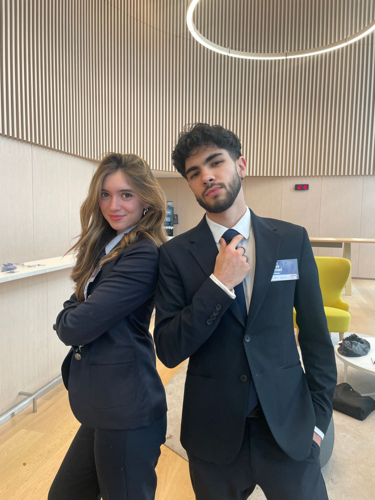

Droit européen · Relations internationales
Lisa-Marie
Roques Monardes Pizarro
Future diplomate — passionnée de négociation, de plaidoirie et de relations internationales franco-chiliennes.

À propos
Une vocation pour la diplomatie
Actuellement en deuxième année de droit européen à l'Université Catholique de Lille (campus d'Issy-les-Moulineaux), je me forme aux rouages du droit et des institutions avec un objectif précis : devenir diplomate.
Cette ambition se construit au quotidien à travers la simulation des Nations Unies (MUN), la pratique de l'éloquence et une lecture assidue des grands textes de la diplomatie et des relations internationales. Mes racines franco-chiliennes nourrissent également une sensibilité particulière au dialogue entre les cultures et à la diplomatie bilatérale.
Parcours
Une trajectoire tournée vers l'international
Stage — Ambassade du Chili en France
Immersion au sein d'une représentation diplomatique, à la croisée du droit, de la politique étrangère et de la relation bilatérale franco-chilienne.
Stage — Assemblée nationale
Secrétariat de la commission des affaires européennes — découverte du travail parlementaire et institutionnel au cœur de la vie politique française.
Licence de Droit européen
Université Catholique de Lille, campus d'Issy-les-Moulineaux.
Engagements
Diplomatie et prise de parole
Model United Nations
Participation à des simulations de négociation multilatérale reproduisant le fonctionnement des Nations Unies : rédaction de résolutions, négociation, argumentation diplomatique.
Éloquence
Pratique régulière de l'art oratoire — construction d'argumentaires, prise de parole en public et joutes verbales.
Culture diplomatique
Veille et lecture continue sur les grands enjeux des relations internationales et l'histoire de la diplomatie.
Bibliothèque diplomatique
Quelques lectures marquantes
Contact
Restons en contact
N'hésitez pas à me contacter pour échanger sur la diplomatie, les relations internationales ou toute opportunité de collaboration.